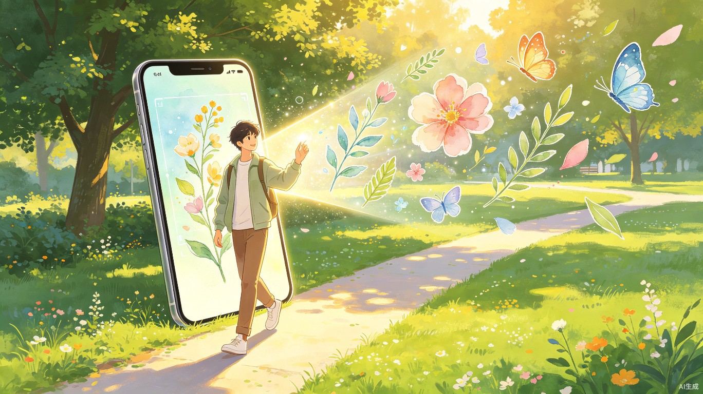
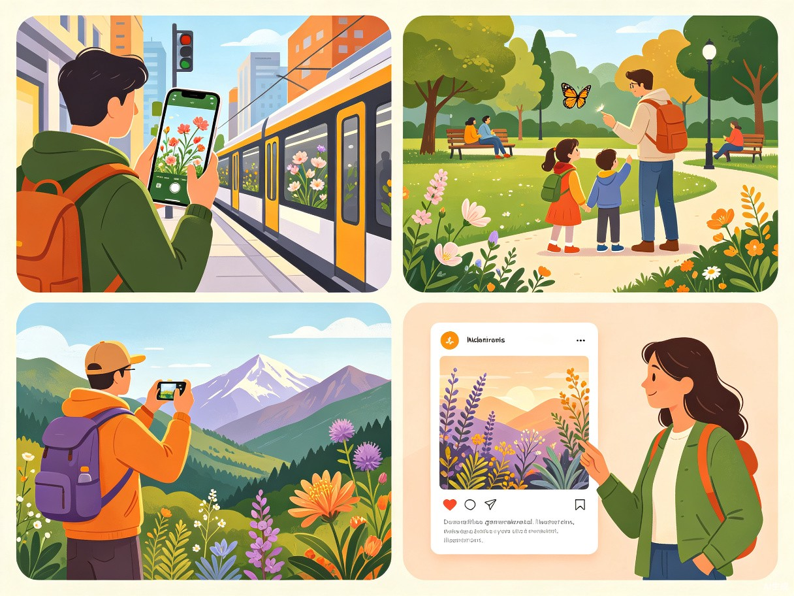
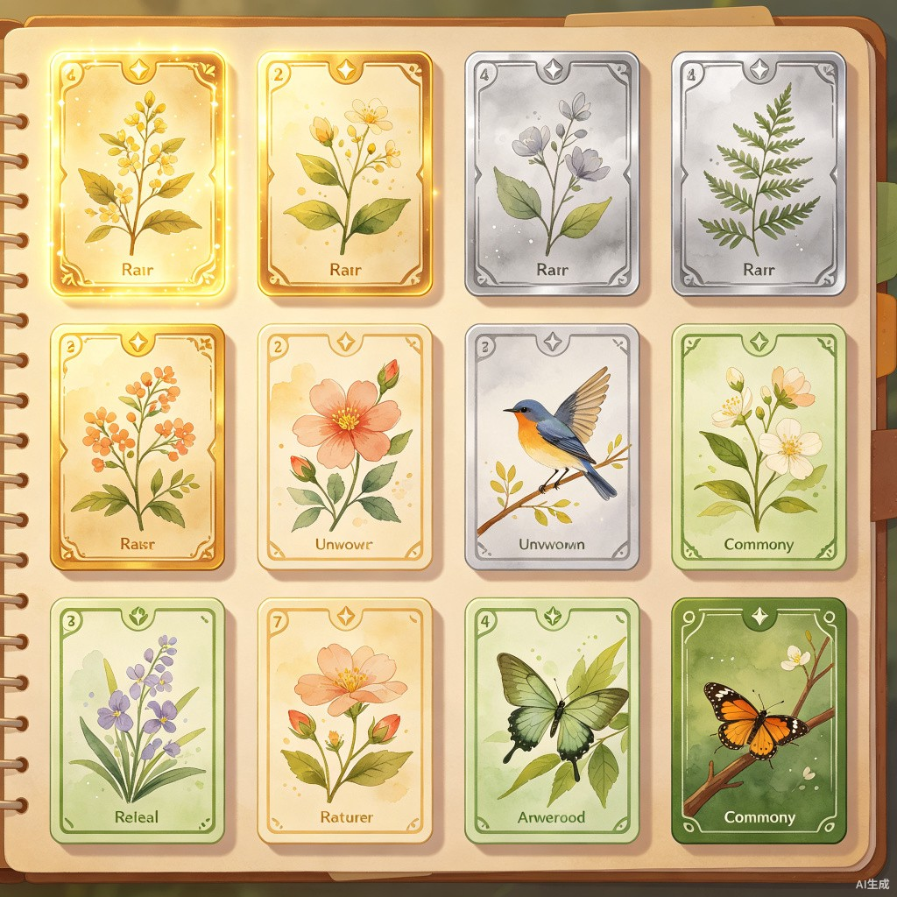

一款将户外探索与 AI 艺术收集相结合的应用，让每一次出门都变成一场有目标的寻宝游戏。

创意介绍
「走走」鼓励用户走出家门，用手机镜头识别身边的动植物乃至天空、建筑，并根据其稀有度生成独特、有时效性的风格化插画。它不只是一个识别工具，更是一套完整的探索-收集-分享体验闭环。
现代城市生活让人们越来越习惯宅在家里，即便身处户外也常常低头赶路，忽略了身边的自然之美与季节变化。「走走」要解决的，正是人们缺乏外出动力和与真实世界产生好奇连接的问题。
灵感来源
我们既向往"诗和远方"，又对家门口一草一木的变化视而不见。如果把探索收集机制与当下流行的 AI 绘画、自然科普结合起来，就能把熟悉的日常环境重新变得充满新鲜感和游戏性——让人们意识到，"奇遇"可能就在楼下花园或上班路上。
每天经过的月季开了、银杏黄了，却总是错过。用户缺少一个主动去发现和感知的契机。
想认识自然，传统做法是拍张照后去搜索引擎或论坛询问，过程繁琐，缺乏即时反馈和成就感。
普通照片难以脱颖而出，而「走走」生成的每张插画都是独一无二、带有个人探索故事的艺术作品。
城市居民对身边物种知之甚少，缺少低门槛、有趣味性的自然科普渠道。
产品概览
对准镜头，即时识别身边的动植物、天空、建筑等，获取物种信息与稀有度评级。
根据识别结果，AI 实时生成独一无二的艺术化"数字标本"，风格随季节与稀有度变化。
集卡式图鉴，按稀有度分级收集。完成区域图鉴解锁成就，让探索有目标、有记录。

目标用户
20-35 岁
工作学习繁忙，渴望生活里的小确幸和惊喜，是游戏化玩法的核心受众。
家长 + 儿童
希望带孩子进行高质量户外活动，寓教于乐，将自然课搬到大自然中。
全年龄段
喜欢植物、动物、摄影、绘画，热衷于记录生活，被艺术化的"数字标本"和集卡机制吸引。
使用场景
在熟悉的路上随时开启 App，看看今天能发现什么。把枯燥的通勤变成一场微型探险。
作为户外活动的主要或辅助目标，带着"收集某种稀有植物"的任务去探索，让出行更有目的感。
在陌生城市记录独特物种，生成专属的旅行纪念卡片，让旅途记忆更具象、更有温度。
收集到一张高稀有度或漂亮插画后，截图分享到社交网络，用独特的视觉内容吸引关注。
当前痛点
每天经过的月季开了、银杏黄了，却总是错过。缺少主动去发现和感知的契机。
拍张照后去搜索引擎或论坛询问，过程繁琐，缺乏即时反馈和成就感。
普通照片难以脱颖而出，社交平台内容千篇一律，缺少独特性和个人故事。

价值与意义
核心的"胶卷"（识别次数）可做应用内购或订阅制。未来可拓展实体周边——将用户的足迹插画打印成装饰画、手机壳，以及与文旅景区、商业体合作推出定制探索路线和限定图鉴，实现流量变现。
用游戏化方式正向激励人们增加户外活动时间，有助于缓解现代生活中的身心压力，让"出门走走"变得有吸引力。
产品像一个"自然之美的翻译器"，降低了普通人欣赏和认知身边生物的门槛，潜移默化地增强人与环境的情感连接。当用户开始为一朵花驻足时，环保意识和对城市生态的关注也会随之而来。
用户分享的不再是一张简单的照片，而是一段探索故事和审美品味的载体。家长和孩子之间也多了一个共同探索、创造回忆的温馨纽带。